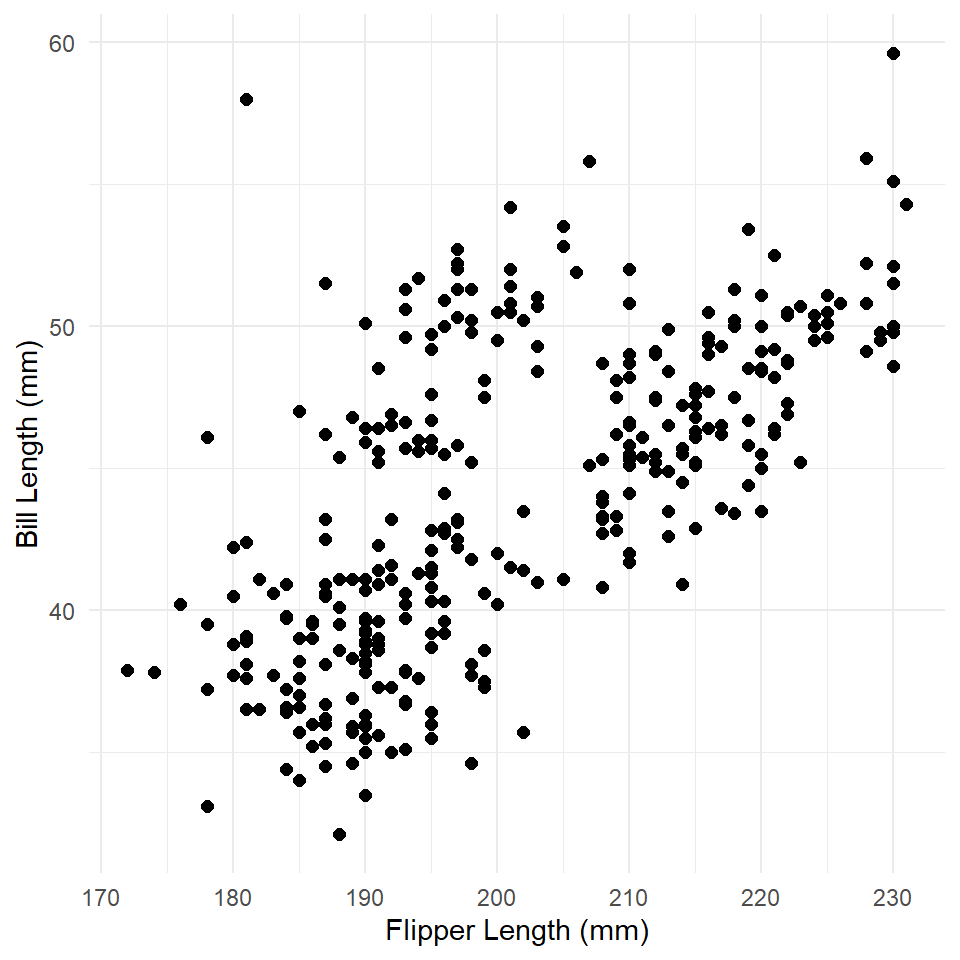

Lab 14: Partial Dependence
(Stats) Making sense of covariance in context. (R) Estimating and visualizing partial dependence.
Outline
Objectives
This lab will guide you through the process of
- Predicting with GLMs
- Back-transforming estimates and standard errors
- Estimating partial dependence
- Visualizing partial dependence
R Packages
We will be using the following packages:
⚠️ Don’t forget to install ggeffects with install.packages("ggeffects"). Best to run this in the console!
Data
-
DartPoints- Includes measurements of 91 Archaic dart points recovered during surface surveys at Fort Hood, Texas.
- package:
archdata - reference: https://cran.r-project.org/web/packages/archdata/archdata.pdf
-
penguins- Includes measurements for penguin species, island in Palmer Archipelago, size (flipper length, body mass, bill dimensions), and sex.
- package:
palmerpenguins - reference: https://allisonhorst.github.io/palmerpenguins/reference/penguins.html
-
Snodgrass- Includes measurements of size, location, and contents of 91 pit houses at the Snodgrass site in Butler County, Missouri.
- reference: https://cran.r-project.org/web/packages/archdata/archdata.pdf
Motivation
With the exception of pure mathematics and maybe fundamental physics, most of our reasoning about the world and our place in it is defeasible, meaning additional information (or additional premises) can alter the goodness of the conclusions we want to draw. If I strike a dry, well-made match, for example, I feel pretty confident that it will light. If I strike a dry, well-made match in the vacuum of space, however, it probably won’t light. Whether the match strikes or not is a Bernoulli outcome, of course, but the general point holds for any discrete or continuous outcome. Its values will only partially depend on the values of a specific covariate or predictor variable. When we fit a simple linear model, we’re sort of just hoping that this problem takes care of itself or, at the very least, that we have good theoretical reasons for thinking it’s not a problem to begin with. When we fit a general linear model, though, or, for that matter, any model with multiple covariates, we have to be a little more deliberate in how we approach this issue. This is especially true when our model includes lots of interactions between and non-linear transformations of variables. Basically, the more complicated the model, the harder it is to summarize the contribution of a covariate using a single number, like coefficient estimate.
In this lab, we are going to focus on how we visualize partial dependence, meaning how we visualize the relationship between an outcome and a single covariate (call it the target variable) while in some sense holding the other covariates fixed. These are sometimes referred to as partial dependence plots (or PDPs).
Warm-up
As a gentle warm-up to generating PDPs, let’s remind ourselves how to visualize an estimated trend in a simple linear model. The model we are going to visualize is a model of bill length by body mass fit to the Palmer Penguins data set.
As always, we’ll start by visualizing the data.
# clean up data, remove rows with missing data
penguins <- na.omit(penguins)
ggplot(penguins, aes(flipper_length_mm, bill_length_mm)) +
geom_point(size = 2) +
labs(
x = "Flipper Length (mm)",
y = "Bill Length (mm)"
) +
theme_minimal()
What is the relationship here? Let’s see if a linear model can help us out.
penguins_model <- glm(
bill_length_mm ~ flipper_length_mm,
family = gaussian,
data = penguins
)
summary(penguins_model)
#>
#> Call:
#> glm(formula = bill_length_mm ~ flipper_length_mm, family = gaussian,
#> data = penguins)
#>
#> Deviance Residuals:
#> Min 1Q Median 3Q Max
#> -8.637 -2.698 -0.579 2.066 19.095
#>
#> Coefficients:
#> Estimate Std. Error t value Pr(>|t|)
#> (Intercept) -7.2186 3.2717 -2.21 0.028 *
#> flipper_length_mm 0.2548 0.0162 15.69 <0.0000000000000002 ***
#> ---
#> Signif. codes: 0 '***' 0.001 '**' 0.01 '*' 0.05 '.' 0.1 ' ' 1
#>
#> (Dispersion parameter for gaussian family taken to be 17.2)
#>
#> Null deviance: 9928.9 on 332 degrees of freedom
#> Residual deviance: 5693.9 on 331 degrees of freedom
#> AIC: 1896
#>
#> Number of Fisher Scoring iterations: 2Now we use the predict() function to generate estimated values for bill length at observed values of flipper length. We then use geom_line() to visualize the trend line (the estimated or modeled values).
penguins <- penguins |> mutate(fit = predict(penguins_model))
ggplot(penguins) +
geom_point(
aes(flipper_length_mm, bill_length_mm),
size = 2
) +
labs(
x = "Flipper Length (mm)",
y = "Bill Length (mm)"
) +
theme_minimal() +
geom_line(
aes(flipper_length_mm, fit),
color = "darkred",
linewidth = 1
)A simple linear trend as expected. To get the standard errors, we can run predict() with the argument se.fit = TRUE. We’ll then add the intervals to the plot with the function geom_ribbon() like so.
estimates <- predict(penguins_model, se.fit = TRUE)
str(estimates)
#> List of 3
#> $ fit : Named num [1:333] 38.9 40.2 42.5 42 ...
#> ..- attr(*, "names")= chr [1:333] "1" "2" "3" ...
#> $ se.fit : Named num [1:333] 0.396 0.333 0.247 0.262 ...
#> ..- attr(*, "names")= chr [1:333] "1" "2" "3" ...
#> $ residual.scale: num 4.15This is a list with three items: fit, se.fit, and residual.scale. The fit is just the estimated response, se.fit the standard error of predicted means, and residual.scale the residual standard deviations. Multiplying the standard error (se.fit) by two and adding/subtracting that value from the fit gives the 95% confidence intervals.
penguins <- penguins |>
mutate(
fit = estimates$fit,
se = estimates$se.fit,
conf_lo = fit - 2*se, # lower confidence interval
conf_hi = fit + 2*se # higher confidence interval
)
ggplot(penguins) +
geom_ribbon(
aes(x = flipper_length_mm, ymin = conf_lo, ymax = conf_hi),
fill = "gray85"
) +
geom_line(
aes(flipper_length_mm, fit),
color = "darkred",
linewidth = 1
) +
geom_point(
aes(flipper_length_mm, bill_length_mm),
size = 2
) +
theme_minimal() +
labs(
x = "Flipper Length (mm)",
y = "Bill Length (mm)"
)
Exercises
- Build a model of penguin flipper length by body mass.
- Make sure to visualize your data first! Make a scatter plot!
- Generate model fit and estimates for confidence intervals using
predict()andse.fit = TRUE.
- Now visualize the response.
- Add the confidence interval using
geom_ribbon(). - Now plot the modeled relationship between flipper length and body mass using
geom_line().
- Add the confidence interval using
Inverse Link
A Gaussian GLM uses an identity link function, which is just a fancy way of saying it doesn’t transform the response variable. That means predictions made with a Gaussian GLM are already on the scale of the response. In the model above, bill length was measured in millimeters and predictions were returned in millimeters. Unfortunately, logistic and Poisson regression are a little bit more complicated than that because they apply logit and log transformations to the response variable. That means predictions made with logistic and Poisson models return predictions on the logit and log scales respectively. These are not always the easiest scales to interpret, so it’s customary to “back transform” the predictions onto the response scale. The transformations applied to the response variable are called link functions, so the functions applied to the predictions to back transform are often referred to as inverse link functions.
In this section, we’ll learn how to access and apply an inverse link to predictions made by a logistic regression model. We’ll be using the Snodgrass data to answer the following
Question Does the size of a house structure (measured in square feet) make it more or less likely that the structure is found inside the inner walls of a site?
As always, we’ll plot these data using a scatterplot.
ggplot(snodgrass, aes(area, inside)) +
geom_point(
size = 3,
alpha = 0.6
) +
labs(
x = "Area (sq ft)",
y = "Inside inner wall"
)And, now we’ll fit a GLM with a binomial error distribution and a logit link function. Recall that the logit link is
\[logit(p) = log\left(\frac{p}{1-p}\right)\]
and that we’re modeling this value as a linear function of covariates:
\[log\left(\frac{p}{1-p}\right) = \beta X\]
So, here’s how we fit that model in R.
glm_snodgrass <- glm(
inside ~ area,
family = binomial(link = "logit"),
data = snodgrass
)
summary(glm_snodgrass)
#>
#> Call:
#> glm(formula = inside ~ area, family = binomial(link = "logit"),
#> data = snodgrass)
#>
#> Deviance Residuals:
#> Min 1Q Median 3Q Max
#> -2.110 -0.481 -0.184 0.288 2.571
#>
#> Coefficients:
#> Estimate Std. Error z value Pr(>|z|)
#> (Intercept) -8.66307 1.81844 -4.76 0.0000019 ***
#> area 0.03476 0.00751 4.63 0.0000037 ***
#> ---
#> Signif. codes: 0 '***' 0.001 '**' 0.01 '*' 0.05 '.' 0.1 ' ' 1
#>
#> (Dispersion parameter for binomial family taken to be 1)
#>
#> Null deviance: 123.669 on 90 degrees of freedom
#> Residual deviance: 57.728 on 89 degrees of freedom
#> AIC: 61.73
#>
#> Number of Fisher Scoring iterations: 6To predict with this, we use the predict() function, just as we did above.
fit <- predict(glm_snodgrass)
# showing the first five fit
fit[1:5]
#> 1 2 3 4 5
#> -3.658 0.235 1.973 7.031 5.588Note that these are on the logit scale (and that they have values less than zero and greater than one). To get these back onto the scale of the response (i.e., probability), we need to apply the inverse link function to these data. For logistic regression, the inverse link is just the logistic function!
\[p = \frac{1}{1+exp(-\beta X)}\]
To do that, we extract the function from the error distribution of the model with the family() function and the $ operator.
inverse_link <- family(glm_snodgrass)$linkinvThis is a function, so we can now apply it to our fit.
tibble(
logit = fit[1:5],
probability = inverse_link(fit[1:5])
)
#> # A tibble: 5 × 2
#> logit probability
#> <dbl> <dbl>
#> 1 -3.66 0.0251
#> 2 0.235 0.559
#> 3 1.97 0.878
#> 4 7.03 0.999
#> 5 5.59 0.996We can use this now to plot the estimated response over our observations.
snodgrass <- snodgrass |>
mutate(
logit = predict(glm_snodgrass),
probability = inverse_link(logit)
)
# plot
ggplot(snodgrass) +
geom_point(
aes(area, inside),
size = 3,
alpha = 0.6
) +
geom_line(
aes(area, probability),
linewidth = 1,
color = "#A20000"
) +
labs(
x = "Area (sq ft)",
y = "Inside inner wall"
)To get the standard errors, we can run predict() with the argument se.fit = TRUE again. Note that the fit and standard error are both on the logit scale this time, so we need to apply the inverse link function.
Here, we add the logit response and se or standard errors to the snodgrass table by extracting the fit and se.fit items from the estimates list. We then convert the logit response to a probability by applying the inverse_link() function. Next, we estimate the upper confidence line conf_hi by applying the inverse_link() to the sum of the logit response and 2 times the standard error (se). To get the lower confidence line conf_lo, we do the same, but taking the difference.
Now we have everything we need to plot the confidence ribbon with geom_ribbon(). Notice that I add the ribbon to the plot before adding the observed points and the estimated trend line! This ensures that points and line are not obscured by the confidence ribbon.
ggplot(snodgrass) +
geom_ribbon(
aes(area, ymin = conf_lo, ymax = conf_hi),
alpha = 0.5,
fill = "gray75"
) +
geom_point(
aes(area, inside),
size = 3,
alpha = 0.6
) +
geom_line(
aes(area, probability),
linewidth = 1,
color = "#A20000"
) +
labs(
x = "Area (sq ft)",
y = "Inside inner wall"
)Exercises
For these exercises, we’ll use the DartPoints dataset from the archdata package. As we did in the previous lab, we are going to use length to see if we can discriminate Pedernales dart points from the other dart points.
- First, load the
DartPointstable withdata("DartPoints"). - Now, let’s do some data wrangling with this table. Make sure to assign it back to your table, so that it saves the changes!And bonus points if you can put this all through one pipe!
- Change all the names to lowercase with
rename_with(tolower). - Use
select()to grab the name (name) and length (length) variables. - Use
rename()to renamenametotype. Hint: use the"new_name" = old_namesyntax, for example,"length" = l. -
THIS IS IMPORTANT!!! Use
mutate()andifelse()to add a columnpedernalesthat is1if the type isPedernalesand 0 otherwise. Hint: fill in the ellipsis inmutate(pedernales = ifelse(type == ...)).
- Change all the names to lowercase with
- Make a scatter plot of the data.
- Build a GLM of the Pedernales type as a function of dart length using a Binomial distribution and the logit link.
- Use
predict()withse.fit = TRUEand assign this to an object calledestimates. - Extract the inverse link function from the model with
family()$linkinvand give it the nameinverse_link. - Now, add the logit, probability, standard errors, and inverse-transformed standard errors to the
dartstable, applying the inverse link function where necessary. - Plot the confidence ribbon. Make sure to add the ribbon to the plot before adding observations or the trend line!
ggeffects
Now, let’s get to partial dependence. Here, we’re going to build a slightly more complicated model of bill length that incorporates information about the species of the penguin. This involves the use of a qualitative or categorical variable which gets coded in the model using dummy variables. In this case, we are estimating different intercepts for each species under the assumption that some species have longer bills than others on average.
Before we do that, though, let’s visualize the data!
ggplot(penguins, aes(flipper_length_mm, bill_length_mm) ) +
geom_point(
aes(color = species, fill = species),
shape = 21,
size = 3
) +
scale_fill_viridis(
name = "Species",
alpha = 0.7,
discrete = TRUE
) +
scale_color_viridis(
name = "Species",
discrete = TRUE
) +
labs(
x = "Flipper Length (mm)",
y = "Bill Length (mm)"
) +
theme_minimal()
Now the model.
penguins_model <- glm(
bill_length_mm ~ flipper_length_mm + species,
family = gaussian,
data = penguins
)
summary(penguins_model)
#>
#> Call:
#> glm(formula = bill_length_mm ~ flipper_length_mm + species, family = gaussian,
#> data = penguins)
#>
#> Deviance Residuals:
#> Min 1Q Median 3Q Max
#> -6.676 -1.748 0.024 1.783 12.387
#>
#> Coefficients:
#> Estimate Std. Error t value Pr(>|t|)
#> (Intercept) -2.4802 4.0795 -0.61 0.54
#> flipper_length_mm 0.2173 0.0214 10.14 < 0.0000000000000002 ***
#> speciesChinstrap 8.7669 0.4006 21.88 < 0.0000000000000002 ***
#> speciesGentoo 2.8489 0.6641 4.29 0.000024 ***
#> ---
#> Signif. codes: 0 '***' 0.001 '**' 0.01 '*' 0.05 '.' 0.1 ' ' 1
#>
#> (Dispersion parameter for gaussian family taken to be 6.75)
#>
#> Null deviance: 9928.9 on 332 degrees of freedom
#> Residual deviance: 2219.9 on 329 degrees of freedom
#> AIC: 1587
#>
#> Number of Fisher Scoring iterations: 2This is a wee-bit more complicated than the simple GLM we fit above, so we are going to use a new package called ggeffects to model the relationship. The process is still the same. First, we generate a table of data by using the model to estimate the response across the range of the covariate. Then, we use that data to plot the response. In this case, we will use the ggpredict() function from ggeffects to generate a table of data for plotting. Then, we will use ggplot() to generate the figure.
The ggpredict() function is extremely useful. In fact, you might even consider using it to generate data for visualizing GLMs and even simple linear models, as it will do all the steps we outlined above in one fell swoop. Like with the base predict() function, it’s first argument is a fitted model. You can also specify what variables to visualize (in this case, we only have one, flipper_length_mm), and you can tell it what levels of a factor variable (in this case, species) to visualize with. You provide this to the terms argument.
The full function call is this.
estimates <- ggpredict(
penguins_model,
terms = c("flipper_length_mm", "species")
)
estimates
#> # Predicted values of bill_length_mm
#>
#> # species = Adelie
#>
#> flipper_length_mm | Predicted | 95% CI
#> ----------------------------------------------
#> 170 | 34.46 | [33.51, 35.40]
#> 180 | 36.63 | [36.03, 37.23]
#> 190 | 38.80 | [38.38, 39.22]
#> 200 | 40.97 | [40.38, 41.57]
#> 220 | 45.32 | [43.99, 46.65]
#> 240 | 49.67 | [47.52, 51.81]
#>
#> # species = Chinstrap
#>
#> flipper_length_mm | Predicted | 95% CI
#> ----------------------------------------------
#> 170 | 43.22 | [41.97, 44.48]
#> 180 | 45.40 | [44.49, 46.31]
#> 190 | 47.57 | [46.90, 48.24]
#> 200 | 49.74 | [49.10, 50.39]
#> 220 | 54.09 | [52.89, 55.28]
#> 240 | 58.43 | [56.47, 60.39]
#>
#> # species = Gentoo
#>
#> flipper_length_mm | Predicted | 95% CI
#> ----------------------------------------------
#> 170 | 37.31 | [35.26, 39.35]
#> 180 | 39.48 | [37.84, 41.12]
#> 190 | 41.65 | [40.41, 42.89]
#> 200 | 43.82 | [42.96, 44.69]
#> 220 | 48.17 | [47.69, 48.65]
#> 240 | 52.51 | [51.45, 53.58]While this printout is somewhat involved, under the hood, it’s really just a tibble with six important columns:
-
x- the predictor variable, -
predicted- the estimated response, -
std.error- the standard error -
conf.low- the lower confidence level at 95%, so roughly \(predicted - 2\cdot std.error\). -
conf.high- the upper confidence level at 95%, so roughly \(predicted + 2\cdot std.error\). -
species- the levels or species in the factor variable used, in this case, to estimate random effects.
So, we can use these variables in our estimates table to plot the responses. Here, we are going to do all of the following.
- We are going to add the original observations as points.
- We’ll also use the
viridiscolor package to apply theviridiscolor palette to the species groups. Note that we use the samename = "Species"for bothscale_fill_viridis()andscale_color_viridis(). This does two things.- First, and most simply, it sets the title of the legend.
- Second, it ensures that the legend for color and fill are combined into one legend.
- To make the points more visible, we
- Set
color = speciesandfill = speciesin theaes(). - Reduce the opacity of the fill to 0.5 (in the
scale_fill_viridis()function!), so we can see overlap in points. - We also set
shape = 21, so we can add a darker border around each point to delineate them.
- Set
- The facet labels are redundant with the color scheme and legend, so we will remove those with
theme().
ggplot(estimates) +
geom_ribbon(
aes(x, ymin = conf.low, ymax = conf.high, color = group, fill = group),
alpha = 0.15
) +
geom_point(
data = penguins,
aes(flipper_length_mm, bill_length_mm, color = species, fill = species),
shape = 21,
size = 3
) +
scale_fill_viridis(
name = "Species",
alpha = 0.7,
discrete = TRUE
) +
geom_line(
aes(x, predicted, color = group),
size = 1.3
) +
scale_color_viridis(
name = "Species",
discrete = TRUE
) +
# facet_wrap(~ species, ncol = 3) +
theme_minimal() +
theme(
legend.position = "top",
strip.background = element_blank(), # remove gray box above each facet
strip.text = element_blank() # remove text labels above each facet
) +
labs(
x = "Flipper length (mm)",
y = "Bill length (mm)"
)This figure has one very serious flaw. It plots the response along the full range of flipper length irrespective of the range of each species. This is a challenge of working with the ggeffects package, unfortunately. If someone can find a good work around for this, I’d like to see it!
If you prefer, the ggeffects package also has an automatic plot() method for generating a ggplot() of the response. In this case, it’s nice to use this because of the difficulty of plotting within the range of the actual data, but it has its own frustrating trade-offs that I won’t get into now.
plot(
estimates,
rawdata = TRUE,
limit.range = TRUE,
colors = "viridis"
) +
labs(
x = "Flipper length (mm)",
y = "Bill length (mm)",
title = NULL
) +
theme_minimal()Exercises
- Build a model of penguin flipper length by body mass and species (let the intercepts vary by species).
- Make sure to visualize your data first! Make a scatter plot! And color points by species!
- Generate model fit and estimates for confidence intervals using
ggpredict()withterms = c("body_mass_g", "species").
- Now visualize the response.
- You can use the
ggplot2orplotmethod.
- Add the confidence interval.
- Add the modeled relationship.
- Add the data points to the model.
- You can use the
Partial dependence
OK, so here’s the basic idea behind partial dependence. For demonstration purposes, let’s say our data set is this subset of the penguins table:
set.seed(42)
my_data <- penguins |>
select(flipper_length_mm, bill_length_mm, body_mass_g) |>
slice_sample(n = 12)
my_data
#> # A tibble: 12 × 3
#> flipper_length_mm bill_length_mm body_mass_g
#> <int> <dbl> <int>
#> 1 187 34.5 2900
#> 2 197 52.2 3450
#> 3 211 45.4 4800
#> 4 195 42.1 4000
#> 5 224 50 5350
#> 6 201 41.5 4000
#> 7 195 41.5 4300
#> 8 198 50.2 3775
#> 9 199 37.5 4475
#> 10 210 52 4800
#> 11 172 37.9 3150
#> 12 187 36.2 3300And we fit our penguins model to this data.
penguins_model <- glm(
bill_length_mm ~ flipper_length_mm + body_mass_g,
data = my_data
)Now, let’s say we want to know how bill length varies as a function of body mass while holding flipper length constant. Here’s how we do that. First, we take the range of flipper length and choose and build a grid with arbitrary number of values within that range, so
In this case, our grid has 3 values. Now, for each of those values, we take our original data set, my_data, and set all the values of flipper length to that value and then estimate the response with our model. We then take the mean of those estimates. This gives us the average response of bill length at each of those three values of flipper length.
new_data1 <- my_data |> mutate(flipper_length_mm = x_grid[1])
new_data1
#> # A tibble: 12 × 3
#> flipper_length_mm bill_length_mm body_mass_g
#> <dbl> <dbl> <int>
#> 1 172 34.5 2900
#> 2 172 52.2 3450
#> 3 172 45.4 4800
#> 4 172 42.1 4000
#> 5 172 50 5350
#> 6 172 41.5 4000
#> 7 172 41.5 4300
#> 8 172 50.2 3775
#> 9 172 37.5 4475
#> 10 172 52 4800
#> 11 172 37.9 3150
#> 12 172 36.2 3300
e1 <- predict(penguins_model, newdata = new_data1)
e1
#> 1 2 3 4 5 6 7 8 9 10 11 12
#> 34.8 33.3 29.7 31.9 28.3 31.9 31.1 32.4 30.6 29.7 34.1 33.7
mean(e1)
#> [1] 31.8
new_data2 <- my_data |> mutate(flipper_length_mm = x_grid[2])
e2 <- predict(penguins_model, newdata = new_data2)
new_data3 <- my_data |> mutate(flipper_length_mm = x_grid[3])
e3 <- predict(penguins_model, newdata = new_data3)
partial_dependence <- tibble(
flipper_length_mm = x_grid,
bill_length_mm = c(mean(e1), mean(e2), mean(e3))
)
partial_dependence
#> # A tibble: 3 × 2
#> flipper_length_mm bill_length_mm
#> <dbl> <dbl>
#> 1 172 31.8
#> 2 198 43.4
#> 3 224 55.0And we end up with an estimate of partial dependence that looks like this.
ggplot(partial_dependence, aes(flipper_length_mm, bill_length_mm)) +
geom_line(
color = "darkred",
linewidth = 1
) +
geom_point(size = 3) +
labs(
x = "Flipper length (mm)",
y = "Bill length (mm)"
) +
theme_minimal()Now, obviously, this would take many many lines of code to estimate the partial dependence for an arbitrary model and data set, especially if we increase the number of points on the grid. Fortunately, the ggeffects package will do these calculations for you. Let’s just run through a full example to see how that works.
First we build the model.
penguins_model <- glm(
bill_length_mm ~ flipper_length_mm + body_mass_g + species,
data = penguins
)
summary(penguins_model)
#>
#> Call:
#> glm(formula = bill_length_mm ~ flipper_length_mm + body_mass_g +
#> species, data = penguins)
#>
#> Deviance Residuals:
#> Min 1Q Median 3Q Max
#> -7.026 -1.526 0.123 1.427 10.731
#>
#> Coefficients:
#> Estimate Std. Error t value Pr(>|t|)
#> (Intercept) 9.202600 3.966540 2.32 0.0210 *
#> flipper_length_mm 0.099064 0.024101 4.11 0.0000499598995988 ***
#> body_mass_g 0.002911 0.000349 8.34 0.0000000000000021 ***
#> speciesChinstrap 9.364750 0.371388 25.22 < 0.0000000000000002 ***
#> speciesGentoo 2.020637 0.612198 3.30 0.0011 **
#> ---
#> Signif. codes: 0 '***' 0.001 '**' 0.01 '*' 0.05 '.' 0.1 ' ' 1
#>
#> (Dispersion parameter for gaussian family taken to be 5.58)
#>
#> Null deviance: 9928.9 on 332 degrees of freedom
#> Residual deviance: 1831.4 on 328 degrees of freedom
#> AIC: 1525
#>
#> Number of Fisher Scoring iterations: 2Now we estimate partial dependence of bill length on flipper length for each species.
And plot the result.
plot(
partial,
rawdata = TRUE,
limit.range = TRUE,
colors = "viridis"
) +
labs(
x = "Flipper length (mm)",
y = "Bill length (mm)",
title = NULL
) +
theme_minimal()Notice that when we control for body mass, the effect of flipper length on fill length is not as large!
Exercises
- Use the model in the last example to make a plot of the partial dependence of bill length on body mass.
- How does it compare to the relationship estimated by the model with just bill length and body mass, which you made above?
Homework
No homework this week.